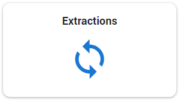
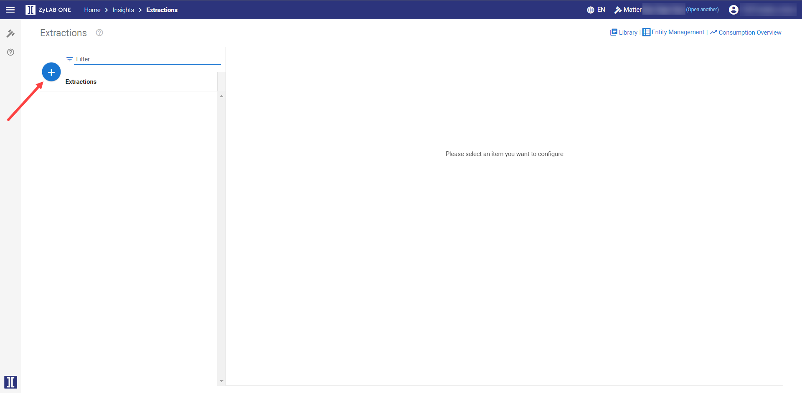
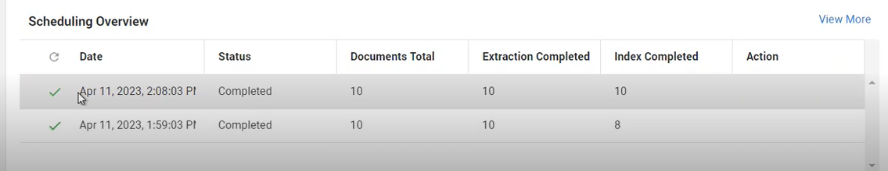

On the Home page, select Insights:

Select Extractions:

|
|
Note: The extraction rule(s) that you wish to apply in the new extraction job, must have been created first; consult the Library to browse existing rules or create new. |
Click  to create a New Extraction.
to create a New Extraction.


Define the Name; enter an easily recognizable name.
By default, Schedule for incoming documents is enabled.
-
When enabled, the extraction job will run on existing and future documents.
-
When disabled, the extraction job will run only on existing documents.
|
|
Tip: To run the extraction only on future documents, use the Query Builder to create a new Query; set the 'from' date to the day after today (the current date), and add the desired filter(s). |

(Optional) You can enable/disable the Schedule for incoming documents option for previously created extraction jobs that are currently running. When enabling/disabling this option for existing extractions, the following applies:
-
If switching from enabled to disabled, the job will no longer run on future documents.
-
If switching from disabled to enabled, the job will run only on future documents.

Note I: When Schedule for incoming documents is disabled, any documents that are added later, will not be processed. If Schedule for incoming documents was disabled but is later enabled, then only the documents that have yet to be added, will be processed.
Documents added while the Schedule for incoming documents option was disabled, will not be processed when Schedule for incoming documents is enabled.
To ensure that there are no discrepancies in document processing, create and run a new extraction on all existing and all incoming documents; create a new extraction job with the same settings and scope, and enable the Schedule for incoming documents option.
Note II: If you were running (an) extraction(s) before updating to 7.0.18923, there can be a discontinuation in document processing.
When migrating to 7.0.18923, the Schedule for incoming documents option is disabled for all migrated extraction jobs. If you then decide to: I) upload a new set of documents and II) enable the Schedule for incoming documents option, there can be a discrepancy in document processing; any documents added while Schedule for incoming documents was disabled, will not have been processed – and will not be processed when the Schedule for incoming documents option is enabled.
If you were running (an) extraction(s) before updating to 7.0.18923, have added documents since updating, and would like to: I) process all documents added since; and II) process any documents yet to be added, then you should create a new extraction job and enable the Schedule for incoming documents option to process all existing and future documents.
When finished, click Apply. The newly created extraction job will start running.
(Optional) To cancel the job that is now running, click the Cancel icon in the Action column.
(Optional) In the Scheduling Overview, you can view the details of the job run.
